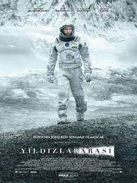
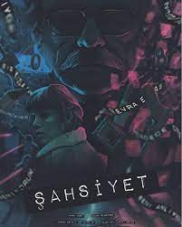
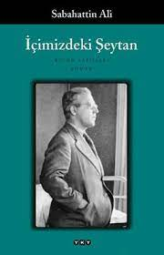

Kübra ÇELEBİ
Hakkımda
23 yaşındayım. Selçuk Üniversitesi Bilgisayar Mühendisliği bölümünden geçen sene mezun oldum. Web alanında kendimi ilerletmek istiyorum, bunun için "Kodluyoruz" da bu eğitime başladım, umarım kendime bir şeyler katabilirim.
*En sevdiğim film, dizi ve kitap*
- FİLM-YILDIZLARARASI

- Yıldızlararası'nda, teknik bilgisi ve becerisi yüksek olan Cooper, geniş mısır tarlalarında çiftçilik yaparak geçinmektedir; amacı iki çocuğuna güvenli bir hayat sunmaktır. Onlarla yaşayan Büyükbaba Donald çocuklara göz kulak olurken, henüz 10 yaşındaki kızı Murph şaşırtıcı bir zekaya sahiptir. Geçmişte bıraktığı biliminsanı kariyerini özleyen Cooper'un karşısına bir gün beklenmedik bir teklif çıkar ve ailesinin, dahası insanlığın güvenliği için zorlu bir karar alması gerekir...
Christopher Nolan'ın, Jonathan Nolan ile kaleme aldığı ve yönetmenliğini sırtladığı filmin yıldız oyunculardan oluşan oyuncu kadrosunda Matthew McConaughey, Anne Hathaway, Jessica Chastain, Matt Damon, Bill Irwin, John Lithgow ve Michael Caine gibi isimler yer alıyor. Bilimkurgunun yanı sıra dramatik öğeler de içeren filmin senaryosu Fizikçi Kip S. Thorne'nun evrendeki 'Solucan Delikleri' teorisinden ilham alıyor.
- DİZİ-ŞAHSİYET

- Agah, adli katip memurluğundan emekli olan bir adamdır. Beyoğlu'nda münzevi bir yaşam süren Agah'ın hayatı, kendisine alzheimer teşhisi konulmasıyla altüst olur. Tüm anılarını zamanla unutacak olmasının acısı karşısında büyük bir yıkıma uğrayan Agah, bir süre sonra bu durumun bir fırsat olduğunu fark eder. Agah, yıllardır ertelediği bir cinayeti işleminin tam zamanı olduğunu düşünür çünkü hastalığından dolayı işleyeceği suçu unutacak ve bundan dolayı vizdan azabı çekmeyecektir. Agah'ın aldığı bu karar sadece onun değil cinayet büro amiri olan Nevra'nın da hayatını etkileyecektir.
- KİTAP-İÇİMİZDEKİ ŞEYTAN

- Roman, Macide ve Ömer isimli iki önemli karakterin aşkını içerir. Eserde kişilerin iç konuşmaları ve kendileri ile hesaplaşmaları yaygın olarak kullanılmış, bu yolla duygu ve hisler çok başarılı bir şekilde anlatılmıştır. Ömer'in sürekli kendini sorgulaması, olaylara çözüm üretmek istemesi ve başarısız olması göze çarpan hususlardandır. Ömer bu sıkıntıları içindeki şeytandan kaynaklandığına kanaat getiriyor. Bu romanında, Sabahattin Ali toplumsal gündemin kişilikler üzerindeki baskısını ve güçsüz insanın "kapana kısılmışlığını" etkileyici bir biçimde anlatıyor. Ayrıca roman, yazarın yaşadığı dönemin (1940’lı yıllar) Türkiye’sini yansıtmaktadır.